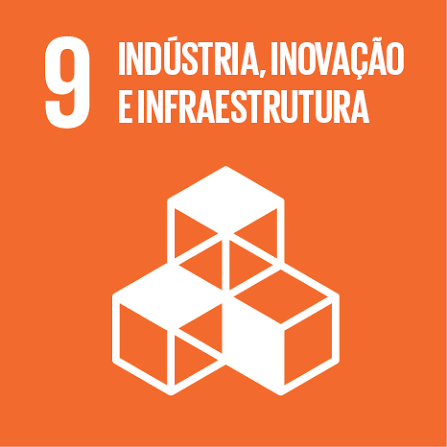

Resumo
Estudante de Engenharia de Software na Universidade Tecnológica Federal do Paraná (UTFPR), com formação técnica em Análise e Desenvolvimento de Sistemas pela ETEC.
Tenho interesse em desenvolvimento de software, banco de dados, automação de processos e inteligência artificial. Busco desenvolver minha experiência profissional na área de tecnologia, aplicando conhecimentos técnicos e aprimorando minhas habilidades em projetos e equipes.
ODS que pretendo contribuir

Pretendo contribuir com o ODS 9 por meio do desenvolvimento de soluções tecnológicas, inovação e criação de sistemas que possam melhorar processos e facilitar o acesso à tecnologia.
Habilidades
- Lógica de programação
- Programação orientada a objetos
- SQL e bancos de dados relacionais
- Git e GitHub
- Fundamentos de desenvolvimento Back-end e Front-end
- Comunicação e trabalho em equipe
- Organização e aprendizado rápido
Educação
- Bacharelado em Engenharia de Software
- Universidade Tecnológica Federal do Paraná - UTFPR
- Cursando
- Técnico em Análise e Desenvolvimento de Sistemas
- ETEC
- 2022 - 2024
Projetos e conquistas
- Participação nos projetos Workable e Memory Up em hackathon da Oracle.
- Finalista na 15ª FETEPS com o projeto Bobina de Tesla Musical, utilizando Arduino Uno.
- Desenvolvimento de projetos acadêmicos envolvendo Java, orientação a objetos, banco de dados e interfaces gráficas.
Certificações e conhecimentos adicionais
- Cambridge Linguaskill - nível geral B1, com nível B2 em Reading e Speaking.
- Cisco Python Essentials 1.
- Santander 2025 - Front-End.
- Alura Imersão Dev - 9ª Edição.
- ENAP - Facilitação de Reuniões.